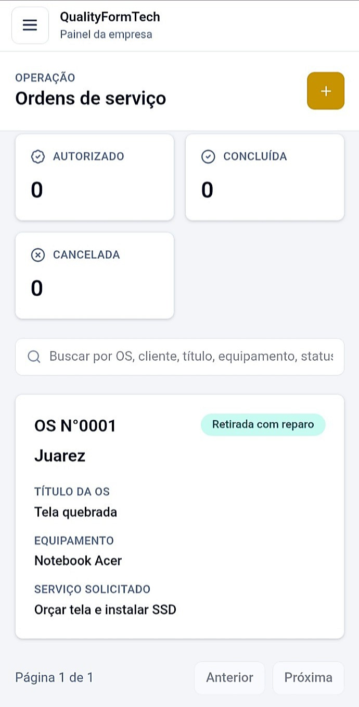
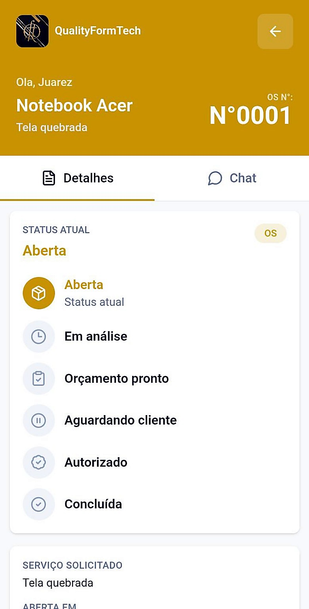

Quality Form Tech
Sistemas para empresas.
A QFT cria soluções digitais para negócios que querem trabalhar com mais clareza, controle e apresentação profissional.

Vitrine QFT
Sistemas da Quality Form Tech
Escolha uma solução para conhecer. Hoje, o sistema disponível na vitrine é o QualityOS Pro.
Sistema selecionado
QualityOS Pro
Uma plataforma para assistências técnicas e prestadores acompanharem ordens de serviço com mais organização, histórico e comunicação.
O atendimento fica conectado à ordem de serviço.
Equipe, cliente e histórico trabalham no mesmo contexto. Menos informação perdida, mais controle sobre cada serviço.
- Dashboard para acompanhar a operação
- Portal para o cliente consultar o andamento
- Chat vinculado ao atendimento
- Detalhes da OS organizados em um só lugar
Benefícios
Para o dia a dia da operação.
Quality Form Tech
Pronto para conhecer a solução?
Veja a demonstração do QualityOS Pro ou fale com a QFT para uma apresentação.